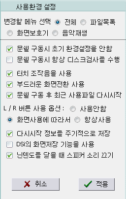
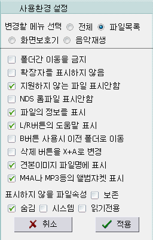
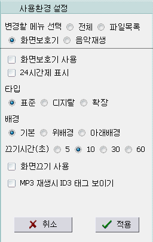
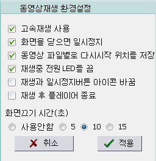
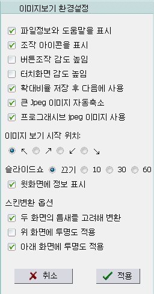
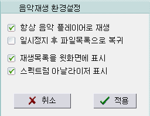
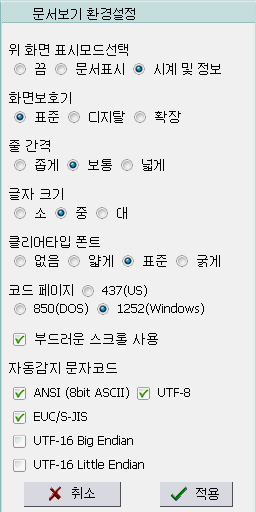

・문쉘 구동시 초기 환경설정을 안함。
・문쉘 구동시 항상 디스크검사를 수행。
특별한 이유가 없는한 체크를 지우지 마세요。
안전을 위해 항상 검사하는 것을 권장합니다。
・터치 조작음을 사용。
・부드러운 화면전환 사용。
・문쉘 구동 후 최근 사용파일 다시시작。
홈브류를 실행했던 것이 있으면 다음 문쉘 구동시 자동으로 이전에 실행했던 홈브류를 실행합니다。
・L/R 버튼 사용 옵션
사용안함,
화면사용에 따라서,
항상사용
・다시시작 정보를 주기적으로 저장。
음악, 이미지, 문서의 마지막 실행상태를 보관 유지합니다。
・DSi의 화면저장 기능을 사용。
DSi에서 SELECT버튼은 화면밝기 조절을 합니다。화면을 저장하시려면 체크해 주세요。
・닌텐도를 닫을 때 스피커 소리 끄기。
많은 한국 유저들의 요청에 의해 만들어진 기능으로 닌텐도를 닫았을 때도 스피커로 소리가 나게 됩니다。

・폴더간 이동을 금지。
・확장자를 표시하지 않음。
・지원하지 않는 파일 표시안함。
AVI나 EXE등의 파일을 표시하지 않게 합니다。
WMA나 JPG등의 지원되는 파일포맷이어도(파일목록에 표시되고 있다해도）열 수 없는 내부포맷이 존재합니다。
・NDS 롬파일 표시안함。
・파일의 정보를 표시。
MP3, JPG, BMP, PSD, DPG만 파일 정보가 표시됩니다。
・L/R버튼의 도움말 표시。
L/R버튼을 길게누르면 도움말이 화면에 보이게 됩니다。
・B버튼 사용시 이전 폴더로 이동。
일반적으로 B버튼은 음악을 정지하는데 사용됩니다。
체크를 하게되면 R버튼을 세 번클릭해 음악을 정지할 수 있습니다。
・삭제 버튼을 X+A로 변경。
START버튼으로 파일 삭제창을 표시했을 때 삭제를 실행하는 키를 변경합니다。일반적으로는 L+R+A버튼을 사용합니다。
・견본이미지 파일명에 표시。
・M4A나 MP3등의 앨범쟈켓 표시。
・표시하지 않을 파일속성
보존, 숨김, 시스템, 읽기전용

・화면보호기 사용。
・24시간제 표시。
・타입
표준,
디지탈, 확장
・배경
기본, 위배경, 아래배경
・끄기시간(초)
5,
10, 30, 60
・화면끄기 사용。
・MP3 재생시 ID3 태그 보이기。

・고속재생 사용。
체크시 동영상을 보다 빠르게 시작할 수 있습니다만 CPU 점유율이 높은 동영상 파일은 제대로 작동하지 않을 수 있습니다。
・화면을 닫으면 일시정지。
・동영상 파일별로 다시시작 위치를 저장。
・재생중 전원 LED를 끔。
・재생과 일시정지버튼 아이콘 바꿈。
아이콘의 모양만 바뀔 뿐 기능이 변경되지는 않습니다。
・재생 후 플레이어 종료。
재생모드(순차재생、반복재생등)에 관계없이 항상 파일목록으로 돌아갑니다。
・화면끄기 시간(초)
사용안함,
5, 10, 15

・파일정보와 도움말을 표시。
・조작 아이콘을 표시。
・버튼조작 감도 높임。
・터치화면 감도 높임。
・확대비율 저장 후 다음에 사용。
・큰 Jpeg 사진 자동축소。
・프로그래시브 Jpeg 이미지 사용。
프로그래시브 Jpeg 파일의 디코딩은 매우 늦고 디코딩 도중 취소를 할 수 없습니다。
・이미지 보기 시작 위치
↖,
↗, ↙, ↘
・슬라이드쇼
끄기, 10, 30,
60
・윗화면에 정보 표시。
・스킨변환 옵션
이미지를 보던 중 START버튼을 눌러서 스킨으로 지정할 때 적옹되는 옵션입니다。
・두 화면의 틈새를 고려해 변환。
・위 화면에 투명도 적용。
・아래 화면에 투명도 적용。

・항상 음악 플레이어로 재생。
파일목록에서 A버튼을 눌렀을 때 문쉘의 기본재생 대신 음악 플레이어를 구동해 음악을 재생하게 됩니다。
・일시정지 후 파일목록으로 복귀。
・재생목록을 윗화면에 표시。
・스펙트럼 아날라이저 표시。
CPU 점유율이 높은 파일포맷(MIDI나 WMA등)을 재생하면서 FFT 계산이 병행되면 잡음이 발생할 수 있습니다。

・위 화면 표시모드 선택
끔, 문서표시,
시계 및 정보
・화면보호기
표준, 디지탈, 확장
・줄 간격
좁게, 보통,
넓게
・글자 크기
소(12pix), 중(14pix), 대(16pix)
・클리어타입 폰트
없음, 얇게, 표준,
굵게
구형 닌텐도등에서 제대로 표시되지 않을 수 있습니다。
DSi에서의 작동은 확인해보지 못했습니다。
・코드 페이지
437
(US), 850 (DOS), 1252
(Windows)
ANSI 포맷에 사용되는 옵션입니다。
・보드러운 스크롤 사용。
・자동감지 문자코드
사용을 원하시는 인코딩 타입만 선택해 주세요。